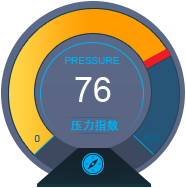

产品质量事件预警
今日累计质量监测事件数
25,084
今日累计预警
28

实时统计
| 时间 |
地区 |
来源 |
| 03:25 |
上海 |
光明网 |
| 04:51 |
四川 |
网易 |
| 07:34 |
兰州 |
中新网 |
| 07:46 |
邯郸 |
中国质量热讯 |
| 08:34 |
上海 |
央视新闻网 |
| 08:52 |
郑州 |
人民网 |
| 09:35 |
成都 |
新浪网 |
| 10:14 |
柳州 |
南都网 |
| 10:16 |
广州 |
新华网 |
| 10:21 |
中山 |
天涯论坛 |
| 10:25 |
盘锦 |
中国青年网 |
| 10:27 |
辽源 |
中国经济网 |
| 10:30 |
廊坊 |
消费质量报 |
| 10:38 |
芜湖 |
新浪微博 |
| 10:53 |
西宁 |
凤凰网 |
| 11:04 |
鄂州 |
腾讯网 |